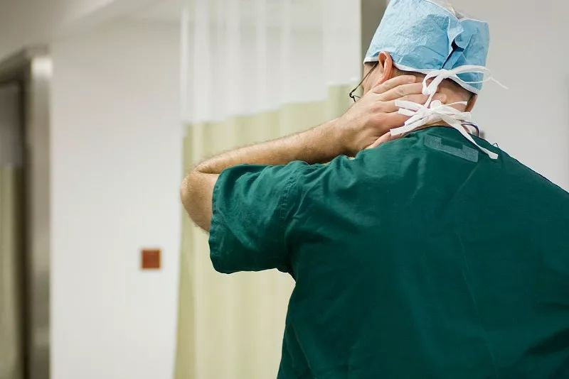
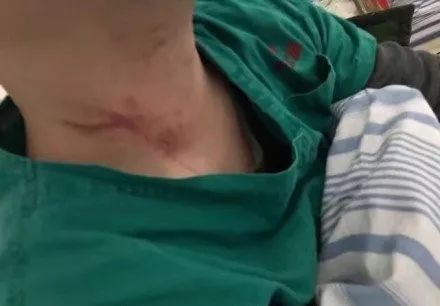
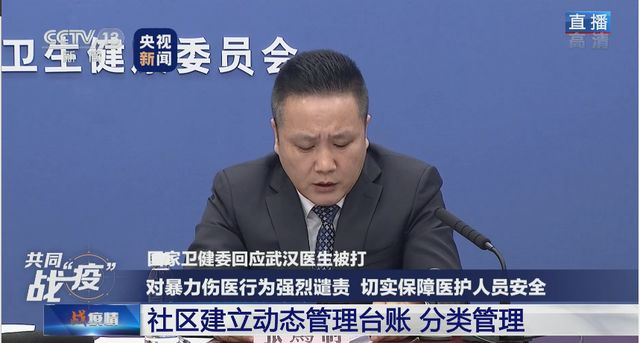

三名一线志愿者口述：红会、校友会、物资信息平台
原文链接 备份链接 “追踪一个人捐赠的物资是真的是没有时间去做的，因为每天捐赠的人太多了” \ 思思，武汉红十字会临时志愿者，话务组 \ 中国红十字会截至 1 月 25 日，累计接受爱心捐赠达 3.4 亿元，接受捐 …

1月29日晚，武汉市四医院西院区的隔离病房内发生了一起严重的伤医事件。
据硚口警方通报，柯某的岳父（68岁）因病毒性肺炎于29日在医院去世，柯某情绪激动，抓扯并殴打医生头部和颈部，在场医生的口罩和防护服被扯坏。目前，警方对柯某进行了刑事拘留。
柯某的殴打行为造成了在场一位心胸外科医生的严重职业暴露，当晚，这位高医生被送往隔离病房等待观察，多处软组织损伤，右侧跟腱存在断裂可能，已无法正常执业。同时，也有一名护士长在推搡中受了伤。
这是武汉市是第一批公布的7家发热门诊定点医院之一。《人物》记者电话联系了被殴打的高医生，他的伤处已经打上了石膏。采访过程中，他缄口不提自己的伤势，避开了所有有关当晚细节的追问。他反复提醒《人物》记者，不要将这件事放大，他接受采访的唯一原因，是「希望能让公众知道政府其他方面的医疗支持，不要恐慌地冲到医院来，现在有很多网上的就诊渠道，我们都在努力，请他们不要恐慌，不要担心。」
昨天，在由丁香园发表的高医生的自述中，他也表达了同样的想法，「现在是敏感时期，我不想打击医务人员的积极性，因为现在疫情很严重，临床一线医务人员很辛苦，我不想对他们造成负面影响。如果您现在是关注我，就帮我们医院多募集些物资，因为我们还有两个病区没有开。没有物资就不能开病区，病人就收治不进来（泣不成声）。」
今天下午，他的朋友圈还在继续分享关于疫情的科普信息：「20个需要关注的有关防控的真相！求转发！」
以下是《人物》与高医生的对话：
文*｜*****林秋铭
编辑*｜*****糖槭
《人物》：目前的伤势怎么样？
高医生：我还好，已经做过检查了，医院已经针对性处理了。不好意思，我希望这个方面你就不要关注了，我对所有找我的人都说，现在不要管我的伤怎么样，你们应该看看，现在医务人员都在干什么，一线人员都在临床一线，给我们到处找物资，如果再关注这个事情，真的一点意义都没有。
我始终都不提这个事情本身，你可以去看看在这之前有多少医务人员挨打了，我只是那么多人中的一个而已，没有必要去过多地去关注这个事情。这个放大只有害处，没有好处，我们的精力现在应该放在防疫上面去。

高医生被抓伤的痕迹 图源网络
《人物》：你所在的医院目前物资状况怎么样？
高医生：很多物资他们都在往这里边送，但是临床上有个问题，我们开的病床越多，消耗也就越大。这是一个不争事实。我们现在还在不断地接收病人，一直在开病区，要开到医院所有的楼层都开完。要有物资才能开，没有物资没有防护进去的话，所有医务人员又变成隔离者，有可能就增加病患人数，这个是毫无意义的。医务人员首先要保证自己的安全。
现在国家也在调拨，我们私底下也是通过各种渠道在募集物资，物资肯定是缺的。后面收治的病人慢慢越来越多，每天消耗也会越来越多，很多人都想在医院住院，我们也在不停地征集床位，火神山和雷神山的医院建成了以后，后面应该会好一些，但是目前床位肯定比较紧张。我们基本上只要开一个病区都会一下子收满。
《人物》：你们怎么解决物资问题？
高医生：我们不停地募集物资，这个时候我们医护人员的心情不是无奈，我们想得到更多的帮助。不管是现在上了一线，还是没上一线的人员，都是这种状态，大家积极性都很高。我们医务处群里面，一说有物资需要去搬运，哗哗哗很多人说我有车，再开着私家车去搬，没有车的就出人力。
我们规定的4个小时要换一套防护服，我们尽量是能做到这个时间。所以在进入病区之前，我们要先搞清楚我今天要做哪些事情，把这些事列个条条条框框出来，做完了以后才能出来，不能浪费一点时间，东西要用在刀刃上。
紧急的时候，在防护服里穿纸尿裤的情况也是有可能出现的。比如我要进去了，我肯定先要做好准备，进去后尽量不会中途跑出来，因为每一套防护服，每一个防护装备都是很金贵的，不能浪费。
《人物》：早上大概几点来上班？晚上几点走？
高医生：从我们开始接收病人，我就没回家了，在医院提供的地方去休息，累的时候一下就能睡着。如果我感觉累了，疲惫得很厉害，我就赶快去休息，等我休息好了，我赶快回来。现在不允许按原来的生物钟去睡，也不分早晚了。
医院划为定点以后，我是第一批医院通知我的，我立马就来了。具体是什么时候接到的通知，我已经记不起了。我记得我大年三十晚上还在值班，具体时间我记不得了，今天初几我都不知道，没有时间概念了。

奋战在一线的医护人员 图源网络
《人物》：你接触的这些病人精神状况怎么样？会怎么去平复他们的心情？
高医生：我们碰到的人目前情绪都还比较稳定的。我们医务人员去关心他，去鼓励他。病区里面，医生、护士基本24小时随时都会去看他们，一般来说，他们的情绪还是比较稳定的。
我第一天接诊的时候，我听到他们很多人说，我住到医院来，我就安全了。到了医院，他们可能就觉得我到了一个安全屋，因为能接触到医生和护士，他们的心情会完全不一样。
我们平时查房的时候，也会跟病人沟通，主要是关心他一些情况，然后去安抚他。如果防控病毒，现在最主要是提高自己的免疫力。我最喜欢说的一句话就是：「吃好喝好睡好，把心情放好，这是抗击病毒最大的法宝。」我喜欢跟病人这样说，我不知道这句话是不是还有漏洞，但是最起码我要鼓励他们，只要他们有信心。
《人物》：来一线工作，你有犹豫过吗？
高医生：没有。因为我爱人是另一家医院的护士，她跟我是一个战线的，比我更早接触这一类的病人。她们医院的培训在我们之前，所以培训一旦有新的东西，她就回来跟我讲。我蛮早就开始学习这些，国家指南，还有同济医院、协和医院的指南，我都很熟。所以去之前，我已经做好准备了。不做好准备，你上战场不就是假的吗？上去无非就是增加一个患者。
《人物》：在就诊的时候，你担心过传染性吗？
高医生：我之前没想过这个问题。当然，我现在因为处于隔离状态，我会考虑这个问题。但是当时，我还真的没有认真去考虑这个事情。就像现在战争来了，当兵的义无反顾地上战场，这是你的职责。现在疫情来了，我们是医生，这就是我们的战场，我们没有什么可犹豫的。这些都是应该的，你想那么多干什么呢？
我每天都在想，如果我们能够把病人的身体状况调到最好，防治可能并发的一些感染，比如呼吸衰竭，肝功能不好。我们如果能把这些状况扭转过来，也许等国家的那些针对性的药物出来了，疫情会得到极大的缓解。
《人物》：会感到疲惫或者无力吗？
高医生：累肯定都会累。工作累了，我就睡，我从来没有让自己崩溃过。我也没有听到我们病区有医生抱怨，大家多半都在想物资怎么办。其实大家心都是这样想的，我要弄物资，我要开更多的病区，我要帮助更多的人，尽量减少死亡率。
《人物》：你在心里有责怪过患者家属吗？
高医生：没有，从来没有过。他当时说要和我道歉，我跟他说我明白他现在的心情，因为我自己的父亲已经去世10多年了，我知道自己当时的心情，我也能够理解他。他其实挺后悔自己的举动的，至于具体的事情我不想过多地去提。
我觉得这个事情真的是一个很小的事情，因为放在目前这个情况下，根本不值一提，特别是当我看到我们的同事，他们虽然在家里休息，还是义无反顾地去帮医院这边做事情，随叫随到。我们再去讨论我这一件小事情有意义吗？根本没有价值。
如果说通过我这个事情，能够让医生和患者家属真正形成一个共同战线，我是很欣慰的，我也希望能达到这个效果。
《人物》：如果在这样一个高压环境下，医患关系一定要有一个切口解决的话，两边应该怎么做？
高医生：比如说我查了房以后，虽然家属们不能到病房，我电话跟他们沟通交流，有什么问题直接打我们电话，随时都有人接听。这是可以沟通的途径。
另一方面，其实患者和家属对这个疾病的认识，不像我们想象的那么多。临床一线的医务人员肯定会仔细去看那些指南，但是家属面对医学词汇，不一定看得懂。所以我希望很多媒体大家尽量用很通俗、很科普的方法，去让大家知道这个病是怎么回事，让大家能够去理解这个病是什么样子的，让我们和医生护士共同去为患者找到一个最好的治疗效果。
如果让我来说就是两个字，理解。医生要理解患者，病患的家属也要理解医务人员，我们之间要有信任。

图源梨视频
《人物》：这件事会磨损你从医的热情吗？
高医生：不会，因为能够理解，怎么会磨损自己的热情呢？怎么会减轻自己的热情呢？不会的。
《人物》：你大概就从医多少年了？
高医生：我2000年读的本科，08年读的研究生，到现在有十几年了。当时05、06年的时候，我在心血管专科工作，发现了一个比较特殊的病例，想进一步研究的时候，发现自己本科的知识不够用，我想继续学得更多，所以又回去读研了，慢慢地提高自己，也慢慢地走到了今天。
《人物》：家人知道你受伤了吗？
高医生：昨天我是被电话和微信吵醒的，我都没搞清楚什么情况，有很多朋友就问我怎么回事，情况怎么样。我说，什么事情怎么样？怎么别人都比我知道的多得多？快把我搞懵了。
我没敢告诉我妈妈这件事，怕她担心。她昨天晚上才知道这件事。她和我视过频，妈妈自然是担心孩子的。我妈身体也不好，她是帕金森重症，在家照顾我的儿子。我妈妈是我们坚强的后盾，她来照顾小孩的起居。我小孩也5岁了，有很多事情，他自己也可以做。我安慰我妈，不用担心我，自己在家里好好的。
《人物》：现在确诊了吗？
高医生：我昨天已经取了咽拭子做检测。还没确诊，还在隔离观察。
我现在也没有什么特别的变化，还在观察期间，自己很乐观。虽然我是基层的医生，我站不了那么高，现在不能够在一线，但我尽量去帮大家。我们一定要相信医疗系统，相信医护人员。
《人物》：从一线退下来后，你的心情怎么样？
高医生：当天晚上，我突然走了，我对这个事情很焦急，我如果离开了那个岗位，我们的同事就会少一个人，他们就更辛苦。每个岗位每个人都很重要。如果突然一个人倒下的话，这个岗位上面就需要人填补，没有人填补，一个人就要做两个人的事情。
我现在肯定是要隔离一段时间，不能在一线工作了。我还是很不愿从医院一线上退下来的。跟病人接触以后，基本上很少人愿意退下来。很多急诊科的主任患病以后，他们都会哭，自己不愿意离开。这些是我的前辈，是我的学长们，我都很感动。
《人物》：你不太想提前两天发生的那件事吗？
高医生：那件事情有警察去处理，有国家法律。现在医院也给我配备了很多防护药品，我现在在吃药，在做好每天的监护工作。它不是百分百中招，也不是得了马上就不行了，我也不怕，及早治疗就好。我毕竟学了这么多知识，我自己还是了解的，我该吃的要吃，该做的检测去做。
如果大家关注那件事情，会释放很多负能量，不适合现在说给大家听。一关注很多人就会跳出来很气愤，这样不好。把他们的积极性和战斗力拉起来，这个才是最重要的。我在群里面都是鼓舞我的同行，跟我同学说不要转发我的事，要转就从另外一个角度转。
我们同学也很能理解我的想法，他们很多是学医的，一说大家都懂。医生的誓言、我们的职责大家都很熟悉，面对疾病，医生、护士、患者、家属，我们本身就是一条战线上的人。不管什么时候，我们都是一条战线上的，疾病才是我们最大的敌人。

图源央视新闻
文末注：
1月29日，就在高医生被殴打的当晚，湖北省公安厅发布了《关于依法严厉打击涉医违法犯罪维护医疗秩序的通告》，第二条、第三条明确：新型冠状病毒携带者在公共场合向他人吐口水、患有或疑似患有新型冠状病毒感染的肺炎拒绝接受检疫、强制隔离或治疗，过失造成传染病传播的，将被追究刑事责任；故意伤害医务人员，造成轻伤以上严重后果的，随意殴打医务人员，情节恶劣的，任意损毁公私财物，情节严重的，采取暴力或者其他方法公然侮辱、恐吓医务人员，情节严重（恶劣）的，依法追究刑事责任。

长按二维码向我转账
受苹果公司新规定影响，微信 iOS 版的赞赏功能被关闭，可通过二维码转账支持公众号。
原文链接 备份链接 “追踪一个人捐赠的物资是真的是没有时间去做的，因为每天捐赠的人太多了” \ 思思，武汉红十字会临时志愿者，话务组 \ 中国红十字会截至 1 月 25 日，累计接受爱心捐赠达 3.4 亿元，接受捐 …
原文链接 备份链接 武安医生（化名）所在的医院是孝感市三家抗疫医院之一。距离武汉66公里的孝感是距离武汉最近的地级市，截止到1月28日上午，有确诊病例173例。与暴风眼武汉一样，以孝感为代表的武汉周边小城也正在经历着决战时刻。 坐诊之 …
原文链接 备份链接 武汉封城、公共交通全部关停以后，陈述杰和几个朋友一起召集起一支4000多人的爱心车队，为武汉市的医务工作者们提供后援支持。直到1月25号，团队里已知至少三人出现发热，公益接送医生行动暂时停止，他们仍然在帮忙运输医疗物 …
原文链接 备份链接 武汉第一批七家定点医院医用物资也存在短缺 防疫物资今日抵达汉口，明日有望缓解 本文首发于南方人物周刊 文 | 本刊记者 徐梅 赵蕾 张宇欣 编辑 | 周建平 蒯乐昊 全文约3479字，细读大约需要9分钟 有的市属一 …
原文链接 备份链接 按规定，他们每接一次病人，都要全车消毒、销毁防护服，不然可能会成为新的传染源。但现实情况是，他们全站连一套防护服都没了。除夕夜里两点，他没有睡觉，发了这半年里唯一一条不是关于女儿的朋友圈，是一条物资的求助。他告诉《人 …